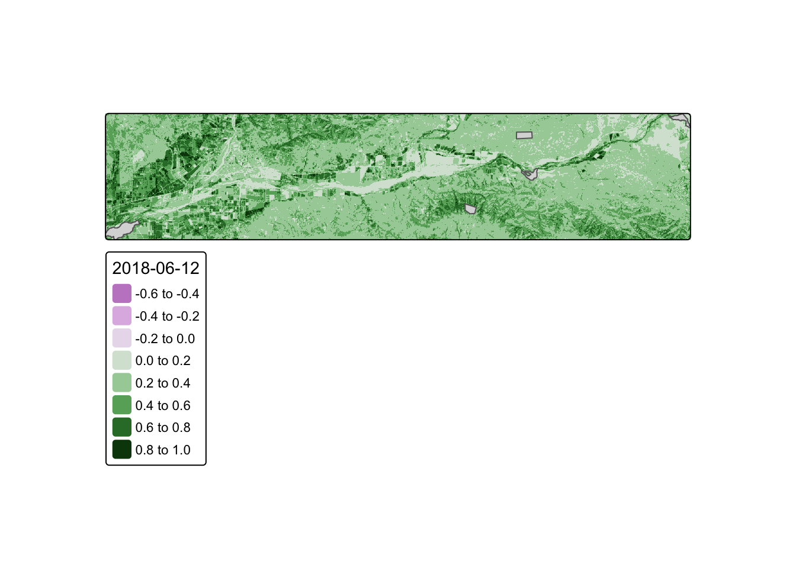
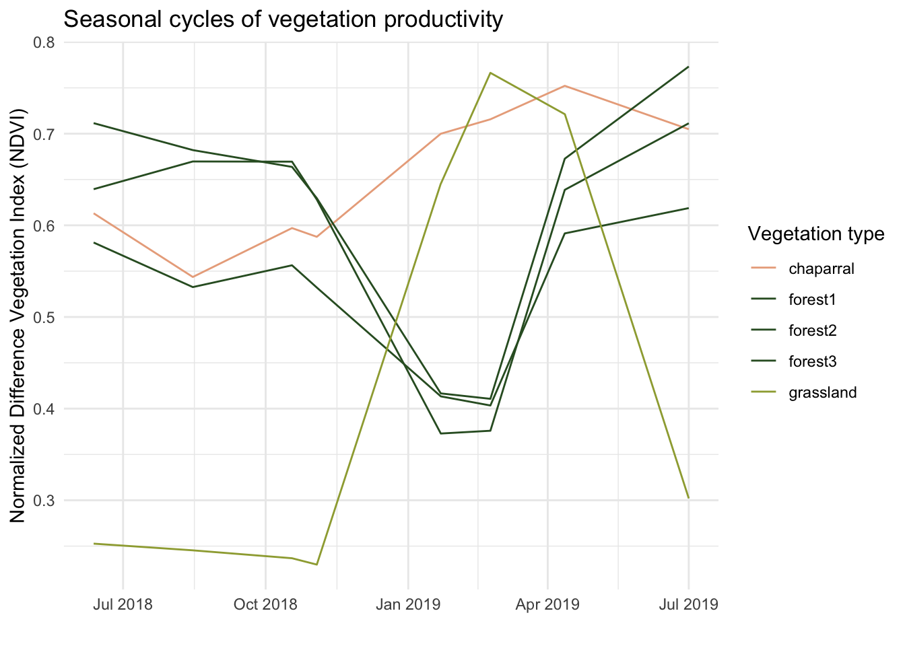
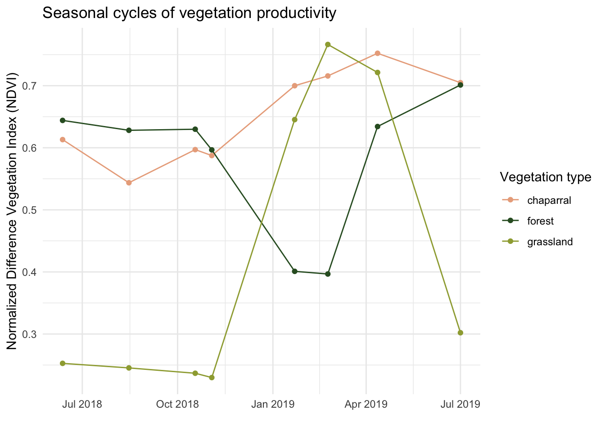
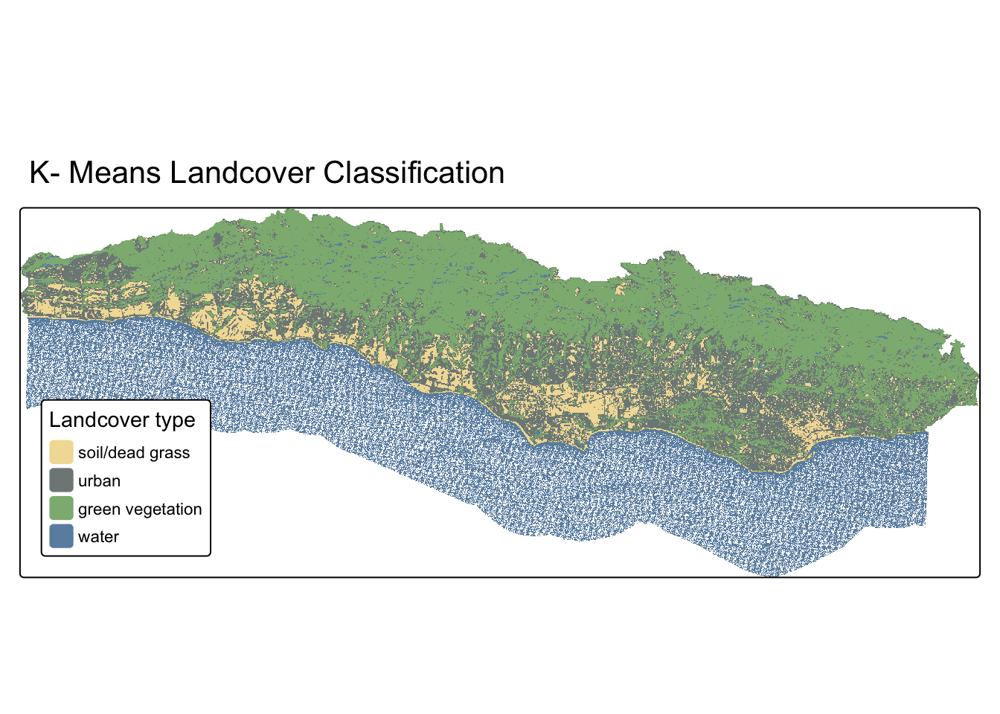

install.packages("rpart")
install.packages("rpart.plot")
NoteSource Materials
The following materials are based on materials developed by Dr. Chris Kibler for the UCSB Geography Department.
Background
Monitoring the distribution and change in land cover types can help us understand the impacts of phenomena like climate change, natural disasters, deforestation, and urbanization. Determining land cover types over large areas is a major application of remote sensing because we are able to distinguish different materials based on their spectral reflectance.
Classifying remotely sensed imagery into land cover classes enables us to understand the distribution and change in land cover types over large areas.
There are many approaches for performing land cover classification:
- Supervised approaches use training data labeled by the user
- Unsupervised approaches use algorithms to create groups which are identified by the user afterward
Task
In this lab, we are using a form of supervised classification – a decision tree classifier.
Decision trees classify pixels using a series of conditions based on values in spectral bands. These conditions (or decisions) are developed based on training data.
In this lab, we will create a land cover classification for southern Santa Barbara County based on multi-spectral imagery and data on the location of 4 land cover types:
- green vegetation
- dry grass or soil
- urban
- water
To do so, we will need to:
- Load and process Landsat scene
- Crop and mask Landsat data to study area
- Extract spectral data at training sites
- Train and apply decision tree classifier
- Plot results
Data
Landsat 5 Thematic Mapper
- Landsat 5
- 1 scene from September 25, 2007
- Bands: 1, 2, 3, 4, 5, 7
- Collection 2 surface reflectance product
Data files:
landsat-data/LT05_L2SP_042036_20070925_20200829_02_T1_SR_B1.tiflandsat-data/LT05_L2SP_042036_20070925_20200829_02_T1_SR_B2.tiflandsat-data/LT05_L2SP_042036_20070925_20200829_02_T1_SR_B3.tiflandsat-data/LT05_L2SP_042036_20070925_20200829_02_T1_SR_B4.tiflandsat-data/LT05_L2SP_042036_20070925_20200829_02_T1_SR_B5.tiflandsat-data/LT05_L2SP_042036_20070925_20200829_02_T1_SR_B7.tif
Study area
Polygon representing southern Santa Barbara county
Data file: SB_county_south.shp
Training data
Polygons representing sites with training data - type: character string with land cover type
Data file: trainingdata.shp
Data Pre Processing
1. Set up
To train our classification algorithm and plot the results, we’ll use the rpart and rpart.plot packages.
Let’s load all necessary packages:
library(sf) # vector data
library(terra) # raster data
library(here) # file path management
library(tidyverse)
library(rpart) # recursive partitioning and regression trees
library(rpart.plot) # plotting for rpart
library(tmap) # map making2. Load Landsat data
Let’s create a raster stack. Each file name ends with the band number (e.g. B1.tif).
- Notice that we are missing a file for band 6
- Band 6 corresponds to thermal data, which we will not be working with for this lab
To create a raster stack, we will create a list of the files that we would like to work with and read them all in at once using the terra::rast() function. We’ll then update the names of the layers to match the spectral bands and plot a true color image to see what we’re working with.
# list files for each band, including the full file path
filelist <- list.files(here::here("data", "landsat-data"), full.names = TRUE)
# read in and store as a raster stack
landsat <- rast(filelist)
# update layer names to match band
names(landsat) <- c("blue", "green", "red", "NIR", "SWIR1", "SWIR2")
# plot true color image
plotRGB(landsat, r = 3, g = 2, b = 1, stretch = "lin")
3. Load study area
We want to constrain our analysis to the southern portion of the county where we have training data, so we’ll read in a file that defines the area we would like to study.
# read in shapefile for southern portion of SB county
SB_county_south <- st_read(here::here("data", "SB_county_south.shp")) %>%
st_transform(SB_county_south, crs = crs(landsat))Code
tm_shape(SB_county_south) +
tm_borders()
4. Crop and mask Landsat data to study area
Now, we can crop and mask the Landsat data to our study area.
- Why? This reduces the amount of data we’ll be working with and therefore saves computational time
- Bonus: We can also remove any objects we’re no longer working with to save space
# crop Landsat scene to the extent of the SB county shapefile
landsat_cropped <- crop(landsat, SB_county_south)
# mask the raster to southern portion of SB county
landsat_masked <- mask(landsat_cropped, SB_county_south)
# remove unnecessary object from environment
rm(landsat, SB_county_south, landsat_cropped)
plotRGB(landsat_masked, r = 3, g = 2, b = 1, stretch = "lin")
5. Convert Landsat values to reflectance
Now we need to convert the values in our raster stack to correspond to reflectance values. To do so, we need to remove erroneous values and apply any scaling factors to convert to reflectance.
In this case, we are working with Landsat Collection 2.
- The valid range of pixel values for this collection goes from 7,273 to 43,636…
- with a multiplicative scale factor of 0.0000275
- with an additive scale factor of -0.2
Let’s reclassify any erroneous values as NA and update the values for each pixel based on the scaling factors. Now the pixel values should range from 0-100%!
# reclassify erroneous values as NA
rcl <- matrix(c(-Inf, 7273, NA,
43636, Inf, NA), ncol = 3, byrow = TRUE)
landsat <- classify(landsat_masked, rcl = rcl)
# adjust values based on scaling factor
landsat <- (landsat * 0.0000275 - 0.2) * 100
# check values are 0 - 100
summary(landsat) blue green red NIR
Min. : 1.106 Min. : 0.743 Min. : 0.004 Min. : 0.232
1st Qu.: 2.490 1st Qu.: 2.173 1st Qu.: 1.084 1st Qu.: 0.749
Median : 3.064 Median : 4.588 Median : 4.447 Median :14.394
Mean : 3.833 Mean : 5.017 Mean : 4.920 Mean :11.515
3rd Qu.: 4.626 3rd Qu.: 6.758 3rd Qu.: 7.404 3rd Qu.:19.341
Max. :39.425 Max. :53.321 Max. :56.684 Max. :57.080
NA's :39856 NA's :39855 NA's :39855 NA's :39856
SWIR1 SWIR2
Min. : 0.097 Min. : 0.199
1st Qu.: 0.410 1st Qu.: 0.600
Median :13.432 Median : 8.155
Mean :11.877 Mean : 8.516
3rd Qu.:18.695 3rd Qu.:13.066
Max. :49.132 Max. :48.068
NA's :42892 NA's :46809 Supervised Classification
1. Training classifier
Let’s begin by extracting reflectance values for training data!
We will load the shapefile identifying locations within our study area as containing one of our 4 land cover types.
# read in and transform training data
training_data <- st_read(here::here( "data", "trainingdata.shp")) %>%
st_transform(., crs = crs(landsat))Now, we can extract the spectral reflectance values at each site to create a data frame that relates land cover types to their spectral reflectance.
# extract reflectance values at training sites
training_data_values <- terra::extract(landsat, training_data, df = TRUE)
# convert training data to data frame
training_data_attributes <- training_data %>%
st_drop_geometry()
# join training data attributes and extracted reflectance values
SB_training_data <- left_join(training_data_values, training_data_attributes,
by = c("ID" = "id")) %>%
mutate(type = as.factor(type)) # convert landcover type to factorNext, let’s train the decision tree classifier!
To train our decision tree, we first need to establish our model formula (i.e. what our response and predictor variables are).
- The
rpart()function implements the CART algorithm - The
rpart()function needs to know the model formula and training data you would like to use - Because we are performing a classification, we set
method = "class" - We also set
na.action = na.omitto remove any pixels withNAs from the analysis.
# establish model formula
SB_formula <- type ~ red + green + blue + NIR + SWIR1 + SWIR2
# train decision tree
SB_decision_tree <- rpart(formula = SB_formula,
data = SB_training_data,
method = "class",
na.action = na.omit)To understand how our decision tree will classify pixels, we can plot the results!
TipInterpreting decision trees
Note: The decision tree is comprised of a hierarchy of binary decisions. Each decision rule has 2 outcomes based on a conditional statement pertaining to values in each spectral band.
Code
# plot decision tree
prp(SB_decision_tree)
2. Classify image
Now that we have a rule set for classifying spectral reflectance values into landcover types, we can apply the classifier to identify the landcover type in each pixel.
The terra package includes a predict() function that allows us to apply a model to our data. In order for this to work properly, the names of the layers need to match the column names of the predictors we used to train our decision tree. The predict() function will return a raster layer with integer values. These integer values correspond to the factor levels in the training data. To figure out what category each integer corresponds to, we can inspect the levels of our training data.
# classify image based on decision tree
SB_classification_dt <- terra::predict(landsat, SB_decision_tree, type = "class", na.rm = TRUE)
# inspect level to understand the order of classes in prediction
levels(SB_training_data$type)[1] "green_vegetation" "soil_dead_grass" "urban" "water" 3. Plot results
Now we can plot the results and check out our land cover map!
Code
# plot results
dt_plot <- tm_shape(SB_classification_dt) +
tm_raster(
col.scale = tm_scale(
values = c("#8DB580", "#F2DDA4", "#7E8987", "#6A8EAE"),
labels = c("green vegetation", "soil/dead grass", "urban", "water")
),
col.legend = tm_legend("Landcover type")
) +
tm_title(text = "Decision Tree Landcover Classification") +
tm_layout( legend.position = c("left", "bottom"))
dt_plot
Unsupervised
There are many approaches for performing land cover classification! We just saw an example of a supervised classification - decision trees! To build the decision tree, we provided training data that was labeled by the user. But remember, our data might not always be labeled! We will see this scenario through now with a k means algorithm, where we provided unlabeled data that the algorithm will put into groups for us. At the end, we must figure out which group is which landcover type.
We already processed our landsat data by cropping/masking to our area of interest and converting the values to reflectance. Now it’s time to jump into the classifying!
1. Convert raster data to a dataframe and scale
The first step is to prepare our data for k-means clustering. Unlike the decision tree which can work directly with raster objects, k-means requires our data to be in a dataframe format. We’ll extract the spectral band values for each pixel and then scale them. Scaling is critical for k-means because the algorithm measures distances between pixels - if one band has much larger values than another, it would dominate the clustering. Scaling puts all bands on the same scale so each contributes equally.
# Convert raster to dataframe
landsat_df <- as.data.frame(landsat, xy = TRUE, na.rm = TRUE)
# Extract spectral bands for clustering
spectral_data <- landsat_df[, c("blue", "green", "red", "NIR", "SWIR1", "SWIR2")]
# Scale the data
spectral_data_scaled <- scale(spectral_data)2. Classify using K means algorithm
Now we’re ready to run the k-means algorithm! We specify centers = 4 because we want to find 4 groups (matching our 4 landcover types). The nstart = 25 parameter tells the algorithm to try 25 different random starting positions and pick the best result - this helps avoid getting stuck in a poor solution. K-means works by iteratively grouping pixels with similar spectral signatures together until it finds stable clusters.
Unlike the decision tree, k-means has no idea what “water” or “green vegetation” looks like - it’s just finding natural groupings in the spectral data!
# Perform k-means with k=4
kmeans_result <- kmeans(spectral_data_scaled, centers = 4, nstart = 25)Warning: Quick-TRANSfer stage steps exceeded maximum (= 39946450)# Add cluster assignments to dataframe
landsat_df$cluster <- kmeans_result$cluster3. Convert data back to raster and add cluster assignments to dataframe.
The k-means algorithm has now assigned each pixel to one of 4 clusters (numbered 1-4). To visualize our results on a map, we need to convert these cluster assignments back into a raster format. We’ll create an empty raster with the same dimensions as our original Landsat data, then fill it with the cluster numbers.
# Set seed for reproducibility
set.seed(223)
# Perform k-means with k=4
kmeans_result <- kmeans(spectral_data_scaled, centers = 4, nstart = 25)
# Add cluster assignments to dataframe
landsat_df$cluster <- kmeans_result$cluster
# Convert back to raster
SB_classification_kmeans <- rast(landsat[[1]])
values(SB_classification_kmeans) <- NA
cells <- cellFromXY(SB_classification_kmeans, landsat_df[, c("x", "y")])
values(SB_classification_kmeans)[cells] <- landsat_df$cluster4. Figure out what our clusters represent!
Here’s where unsupervised classification gets interesting - we have 4 clusters, but we don’t know which is which! The algorithm just labeled them 1, 2, 3, and 4. We need to examine the spectral characteristics of each cluster to determine what landcover type each represents.
We’ll calculate the mean reflectance values for each band within each cluster. By looking at these patterns, we can identify clusters:
- High NIR, low red → likely green vegetation (healthy plants reflect NIR strongly)
- Low NIR, high blue → likely water (water absorbs NIR)
- High values across all bands → likely soil/dead grass (high overall reflectance)
- Moderate values → likely urban areas
Code
# Look at cluster characteristics to determine landcover type
landsat_df %>%
group_by(cluster) %>%
summarise(
blue = mean(blue),
green = mean(green),
red = mean(red),
NIR = mean(NIR),
SWIR1 = mean(SWIR1),
SWIR2 = mean(SWIR2),
n_pixels = n()
) %>%
arrange(cluster) %>%
knitr::kable(digits = 2,
caption = "Mean Spectral Values by Cluster")| cluster | blue | green | red | NIR | SWIR1 | SWIR2 | n_pixels |
|---|---|---|---|---|---|---|---|
| 1 | 8.61 | 12.18 | 14.28 | 21.46 | 29.20 | 22.33 | 68205 |
| 2 | 5.67 | 8.24 | 9.24 | 20.10 | 22.01 | 15.47 | 182886 |
| 3 | 3.36 | 5.04 | 5.09 | 17.69 | 14.71 | 8.65 | 297407 |
| 4 | 2.51 | 2.27 | 1.14 | 1.04 | 0.51 | 0.48 | 250431 |
Code
# Set category labels
levels(SB_classification_kmeans) <- data.frame(
ID = 1:4,
landcover = c("soil/dead grass", "urban", "green vegetation", "water")
)5. Plot Results
Now we can plot the results and check out our land cover map!
Code
# plot results
kmeans_plot <- tm_shape(SB_classification_kmeans) +
tm_raster(
col.scale = tm_scale(
values = c("#F2DDA4","#7E8987", "#8DB580","#6A8EAE"),
labels = c("soil/dead grass", "urban", "green vegetation", "water")
),
col.legend = tm_legend("Landcover type")
) +
tm_title(text = "K- Means Landcover Classification") +
tm_layout(legend.position = c("left", "bottom"))
kmeans_plot
6. Compare our decision tree and kmeans algorithm classification
Now let’s compare our two approaches side-by-side! The decision tree used labeled training data to learn classification rules, while k-means found natural groupings without any training.
tmap_arrange(dt_plot, kmeans_plot, nrow = 1)